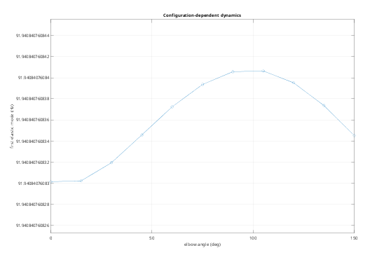
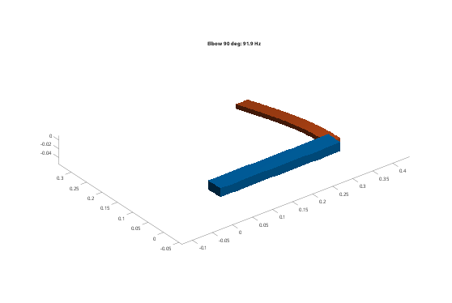
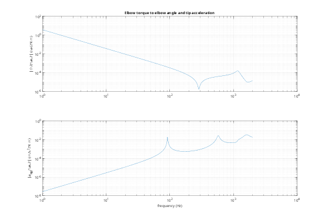
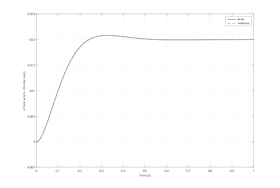

Contents
Tutorial 7 - Linear analysis: equilibrium, modes and state space
The nonlinear system gives a linear model about any state at rest:
M z'' + C z' + K z = B u, y = Cz z + Cv z' + Ca z''
in independent coordinates z (the constraints are eliminated). K includes the stiffness from gravity, constraint forces and preloaded springs. This tutorial covers:
- equilibrium: the static state under gravity and constant inputs
- modes at several operating points (configuration-dependent dynamics)
- linearize and statespace: modal state space, static correction, damping, acceleration outputs
- a controller designed on the linear model, checked in the nonlinear one
addpath(fileparts(fileparts(mfilename('fullpath')))); out = fullfile(tempdir, 'fmbdTutorials'); if ~isfolder(out), mkdir(out); end
1. A horizontal arm with an elastic forearm
A rigid upper arm and an elastic forearm (as in Tutorial 1), on revolute joints about z, with gravity along -z. The joints are free: in the horizontal plane gravity does not turn them, so every pose is an equilibrium. The elbow angle is set with Position.
fmbd.boxSTL(fullfile(out, 'upper.stl'), [0 -0.02 -0.01], [0.3 0.02 0.01]); fmbd.boxSTL(fullfile(out, 'forearm.stl'), [0.3 -0.015 -0.005], [0.6 0.015 0.005]); steel = fmbd.material(210e9, 0.30, 7850); alu = fmbd.material(70e9, 0.33, 2700); upper = fmbd.Body(fullfile(out, 'upper.stl'), steel, Size = 0.02, Rigid = true, Name = 'upper'); forearm = fmbd.Body.elastic(fullfile(out, 'forearm.stl'), alu, Size = 0.006, Modes = 6, ... Damping = [0 2e-5], Name = 'forearm'); arm = @(elbow) scara(upper, forearm, elbow);
2. Equilibrium under gravity
equilibrium solves the static equations (here: the forearm sags under gravity; the free joint angles stay at their Position).
s = arm(0);
x0 = s.equilibrium(); [~, y] = s.simulate([0 1e-4], Initial = x0, Step = 1e-4);
fprintf('gravity sag of the forearm tip: %.1f um\n', 1e6*y.tipz(1));
gravity sag of the forearm tip: -45.4 um
3. Modes at several operating points
The forearm's first bending mode couples with the arm's rigid motion, which depends on the elbow angle: a linear model holds about one pose only. modes gives the frequencies (and shapes) at each equilibrium; the two free joints are mechanism modes at 0 Hz.
elbow = deg2rad(0:15:150); f3 = zeros(size(elbow)); for k = 1:numel(elbow) s = arm(elbow(k)); f = s.modes(s.equilibrium(), 4); f3(k) = f(3); end figure('Color', 'w'); plot(rad2deg(elbow), f3, 'o-'); grid on xlabel('elbow angle (deg)'); ylabel('first elastic mode (Hz)'); title('Configuration-dependent dynamics'); s = arm(pi/2); x0 = s.equilibrium(); [f, V] = s.modes(x0, 4); figure('Color', 'w'); s.plotMode(x0, V(:,3), Amplitude = 0.05, Title = sprintf('Elbow 90 deg: %.1f Hz', f(3)));


4. State space
statespace returns A, B, C, D in modal coordinates [eta; deta] (or an ss object with Format = "ss", Control System Toolbox). Modes truncates the model; the static correction then keeps the DC gain exact. Damping adds a modal damping ratio to the physical dampers (here the forearm's Rayleigh damping). Acceleration outputs have a feedthrough D.
sys = s.statespace(x0, Modes = 6); fprintf('%d states; inputs %s; outputs %s\n', size(sys.A, 1), strjoin(sys.InputName, ', '), ... strjoin(sys.OutputName, ', ')); fprintf('D (tip acceleration per unit torque): %s\n', mat2str(sys.D(end,:), 3)); % frequency response tau2 -> elbow angle and tip acceleration, computed % directly from A, B, C, D fHz = logspace(0, 3.3, 600); H = zeros(numel(sys.OutputName), numel(fHz)); for k = 1:numel(fHz) Hk = sys.C*((2i*pi*fHz(k)*eye(size(sys.A)) - sys.A)\sys.B) + sys.D; H(:,k) = Hk(:,2); end figure('Color', 'w'); subplot(2, 1, 1); loglog(fHz, abs(H(strcmp(sys.OutputName, 'th2'),:))); grid on ylabel('|th2/tau2| (rad/N m)'); title('Elbow torque to elbow angle and tip acceleration'); subplot(2, 1, 2); loglog(fHz, abs(H(strcmp(sys.OutputName, 'tipa'),:))); grid on xlabel('frequency (Hz)'); ylabel('|a_{tip}/tau2| (m/s^2/N m)');
16 states; inputs tau1, tau2; outputs th1, th2, w1, w2, tipz, tipa D (tip acceleration per unit torque): [-0.000104 -0.0241]

5. A controller designed on the linear model
A PD controller on both joints, closed around the linear model, predicts the response to a small elbow step. The nonlinear simulation with the same controller in the loop agrees, as long as the motion stays small.
kp = [16; 1.5]; kd = [1.8; 0.15]; r = [0; 0.02]; % step of 0.02 rad on the elbow iy = cellfun(@(n) find(strcmp(sys.OutputName, n)), {'th1', 'th2', 'w1', 'w2'}); Kc = [diag(kp), diag(kd)]; % u = Kc*([r; 0] - y) Acl = sys.A - sys.B*Kc*sys.C(iy,:); Bcl = sys.B*Kc*[r; 0; 0]; h = 5e-4; t = (0:h:1)'; Ad = expm(Acl*h); Bd = Acl\((Ad - eye(size(Ad)))*Bcl); z = zeros(size(Acl, 1), 1); thLin = zeros(numel(t), 1); for k = 2:numel(t), z = Ad*z + Bd; thLin(k) = sys.C(iy(2),:)*z; end pd = @(t, y) kp.*([0; pi/2 + r(2)] - [y.th1; y.th2]) - kd.*[y.w1; y.w2]; [t, y] = s.simulate([0 1], Step = h, Input = pd, Initial = x0); fprintf('elbow step: linear vs nonlinear max difference %.1e rad (step %.2f rad)\n', ... max(abs(thLin - (y.th2 - pi/2))), r(2)); figure('Color', 'w'); plot(t, thLin, t, y.th2 - pi/2, '--', 'LineWidth', 1.5); grid on xlabel('time (s)'); ylabel('elbow angle - 90 deg (rad)'); legend('linear', 'nonlinear'); function s = scara(upper, forearm, elbow) % Horizontal two-link arm at a given elbow angle. s = fmbd.System(Gravity = [0 0 -9.81]); s.add(upper); s.add(forearm); s.couple('forearm', @(X) X(:,1) < 0.3 + 1e-6, Name = 'root', Point = [0.3 0 0]); tip = @(X) X(:,1) > 0.6 - 1e-6; s.joint('ground', 'upper', 'revolute', Point = [0 0 0], Name = 'shoulder'); s.joint('upper', 'root', 'revolute', Point = [0.3 0 0], Name = 'elbow', Position = elbow); s.input('tau1', 'shoulder'); s.input('tau2', 'elbow'); s.output('th1', 'shoulder'); s.output('th2', 'elbow'); s.output('w1', 'shoulder', Type = 'velocity'); s.output('w2', 'elbow', Type = 'velocity'); s.output('tipz', 'forearm', tip, 3); s.output('tipa', 'forearm', tip, 3, Type = 'acceleration'); end
elbow step: linear vs nonlinear max difference 6.5e-05 rad (step 0.02 rad)
